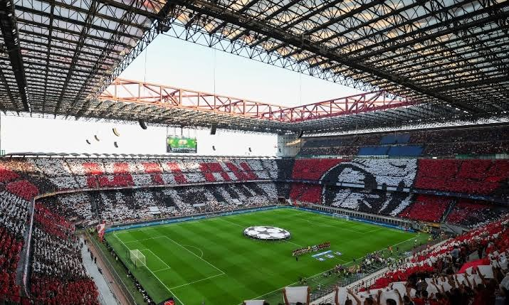

Inter, AC Milan unveil new stadium plans to replace San Siro

Inter and AC Milan have unveiled plans for a shared stadium to replace San Siro, with the new venue expected to open from the 2031/32 season. Named Generali Stadium after its sponsor, the project is scheduled to begin construction in 2028 and is expected to cost the clubs €1.2 billion.
The stadium will hold 71,500 spectators, compared with San Siro’s current capacity of 75,000. Its design, developed by architect Norman Foster and stadium specialist David Manica, is intended to bring fans closer to the pitch. Stands behind the goals will have a steep 37-degree incline, while the overall structure will sit low before rising at either end.
The roof will cover the stands while leaving the pitch exposed. Manica said the design team focused on proximity to the field and acoustics, with the roof intended to amplify crowd noise. He described the project as an effort to carry forward the atmosphere associated with San Siro, rather than simply reproduce its physical form. The venue is also designed to host American football, rugby and concerts.
The clubs paid €197 million to acquire the existing stadium and its adjacent parking areas, where they plan to build their new home. San Siro, also known as Giuseppe Meazza Stadium, opened in 1926 and is Italy’s largest stadium. Despite renovations over the decades, the clubs say the venue no longer meets their needs or those of spectators. It is expected to be largely demolished as construction of the new stadium nears completion.
Source: Vanguard